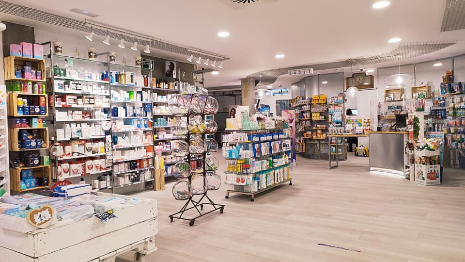

Ortopedia Santé: Una historia de dedicación familiar y vocación por sanar
En el año 2018, en una pequeña ciudad donde las necesidades de salud y rehabilitación crecían día a día, nació Ortopedia Sante, una empresa familiar fundada con el propósito de ofrecer soluciones reales y humanas a quienes enfrentaban desafíos físicos. Detrás de este proyecto estaban Emanuel Espeche y su hijo Nahuel, dos generaciones unidas por el compromiso con el bienestar y la calidad de vida.
Emanuel, con una trayectoria amplia en el mundo de la salud y una visión clara de lo que significaba acompañar al paciente en su recuperación, aportó la experiencia, la calidez humana y la pasión por el trabajo bien hecho. Nahuel, con energía joven y conocimientos actualizados, sumó una visión moderna del negocio, apostando por la innovación, el trato cercano y el crecimiento constante.
Desde sus inicios, Ortopedia Sante se especializó en dos áreas fundamentales: la venta de elementos de rehabilitación —como sillas de ruedas, andadores, órtesis y camas ortopédicas— y la provisión de prótesis para cirugías. Esta doble misión les permitió ser un puente entre el hospital y el hogar, entre el dolor y la esperanza, ayudando a personas a recuperar movilidad, autonomía y dignidad.
Más que una ortopedia, Sante se convirtió en un espacio de confianza. Cada cliente no era solo un número: era una historia, una necesidad particular que Emanuel y Nahuel se tomaban el tiempo de escuchar y atender con dedicación. La combinación entre tradición familiar y compromiso profesional les permitió crecer sostenidamente, siendo reconocidos por médicos, instituciones de salud y, sobre todo, por los pacientes.
Hoy, Ortopedia Sante no solo es un negocio: es el reflejo de un legado, una empresa que nació del corazón de una familia y que sigue escribiendo su historia al lado de cada persona que necesita volver a caminar, sanar o simplemente sentirse acompañada en su proceso de recuperación.